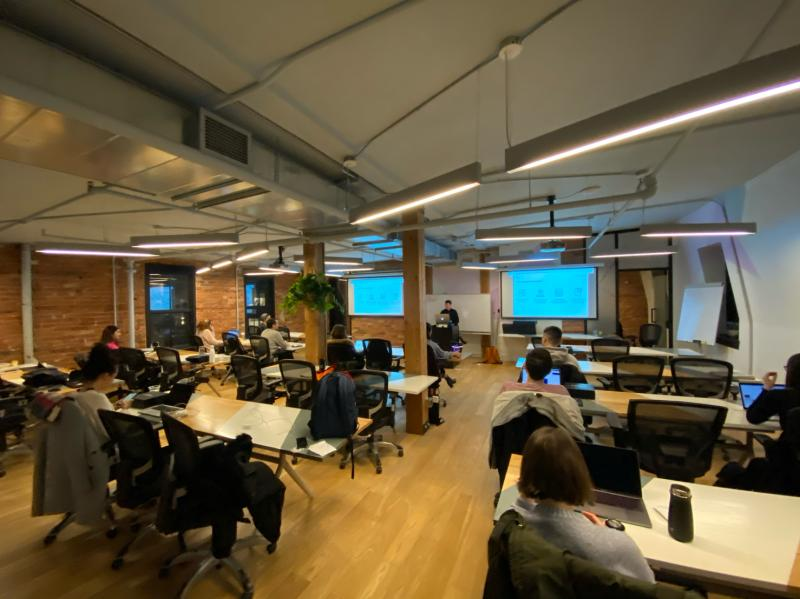
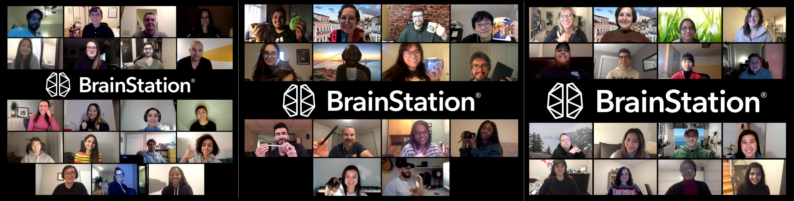
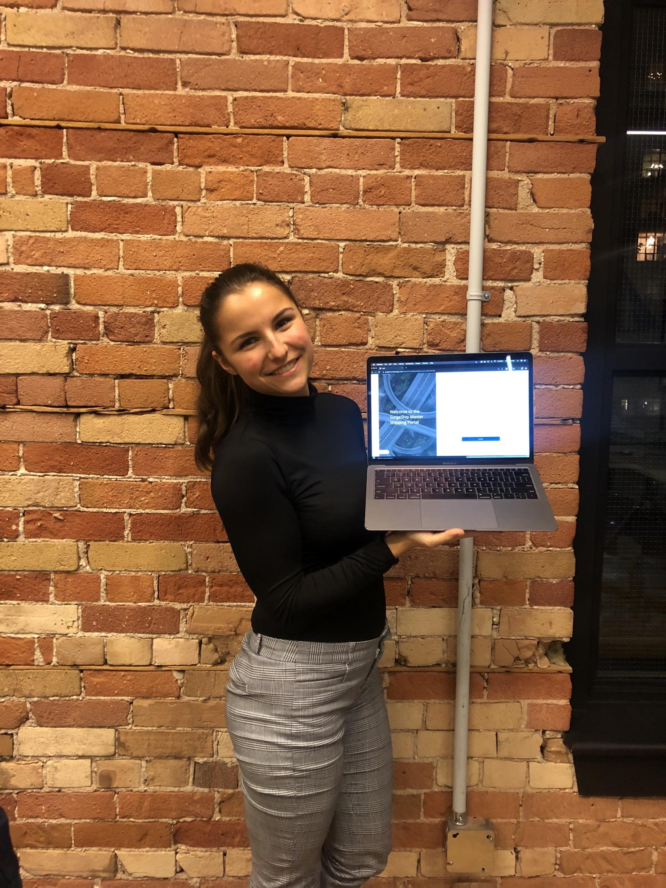
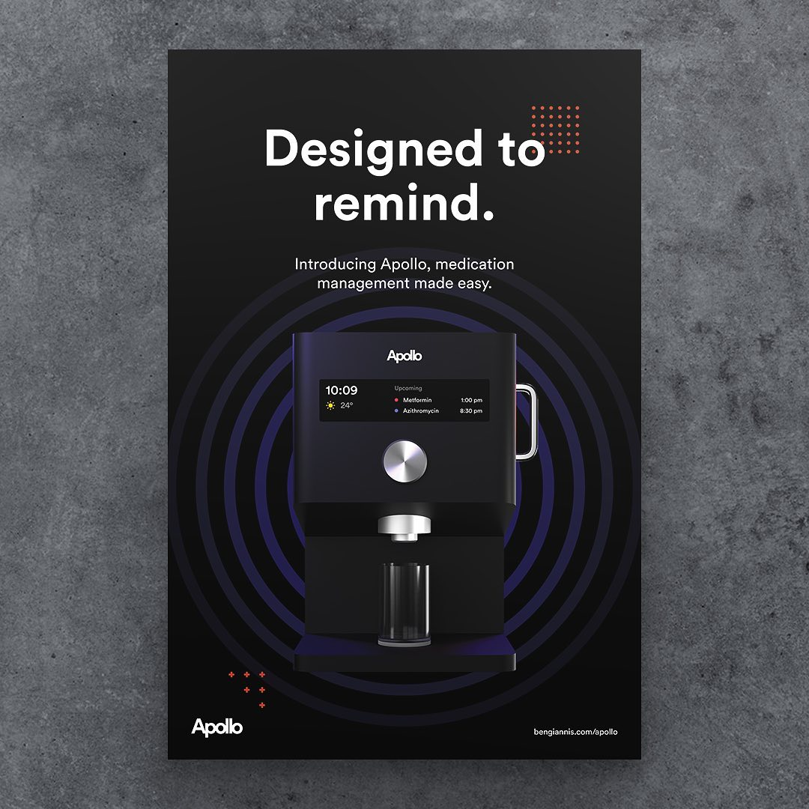

I worked actively on the course curriculum throughout each semester; keeping it up-to-date with the changing industry. I taught eight semesters of design curriculum, alongside one-day workshops and other special engagements.
The goal of the course is often for students to gain the skills (and confidence) to transition from another field into a full-time design position. Sometimes the field is similar such as engineering or product management, but often students come into design from seemingly unrelated fields. I did my best to show them that the skills they have from these professions often help to create a unique and insightful worldview that they can use to their advantage in the design process.
I guide students through various courses such as designing for real world environments, designing for screen and developer handoff, and advanced app/web prototyping.
The goal of the program is to blend a university/theoretical approach with a college/hands-on approach so students can grasp the "why" as well as the "how".
Classroom Experience
I ensure to provide a thorough instruction on topics and give real-life examples. Students tend to be curious about the day-to-day experience of being a designer, so I try to bring examples from my own work to illustrate what it might be like for them in their next design role.
I also ensure the classroom is a safe space by giving everyone a chance to share and discuss topics amongst themselves. I believe they can learn as much from each other as they can from me, and I see great outcomes in students who choose to work in groups when given the option.
Remote Learning
The pandemic hit in week 8 of my Spring UI design course at BrainStation. Those students were especially impressive as they made the graceful switch from in-class learning to remote, presenting their final projects over zoom.
From then on, I knew that the online learning experience would play out differently and I needed to adjust my teaching style to accommodate. I introduced more breaks in the content, knowing that the average attention span drops significantly between in-person and online experiences. I found the best way to create these breaks was to create a safe zoom space and give students permission to ask questions, discuss with each other, and take an active role in their own education. In some cases, this weekly class is a sort of respite for the students from the crazy world we live in, so I take my role very seriously in ensuring the space is fun, inclusive, and a joyful place to be.
Student Spotlight
Amanda (second from left) was a student of mine at BrainStation who went on to win a hackathon at BrainStation with a weekend of quick research, design and rapid prototyping. I was amazed to see her use the skills I taught her to such a high degree of success so quickly.

Tanya took my UI Design class at BrainStation while working in the Konrad Group/BrainStation head office as a strategy and technology consultant. Her praise of my teaching style was a high compliment considering she has taken four other BrainStation courses.
Ben was a student in my York U class Designing for Human Interactions. With my guidance he created a pill dispensing machine for seniors to age actively and always be reminded to take their medication at the proper time.